ITB has many different facilities available on campus, a survey was made in order to see just what are the favourite places on campus for student and staff and why.
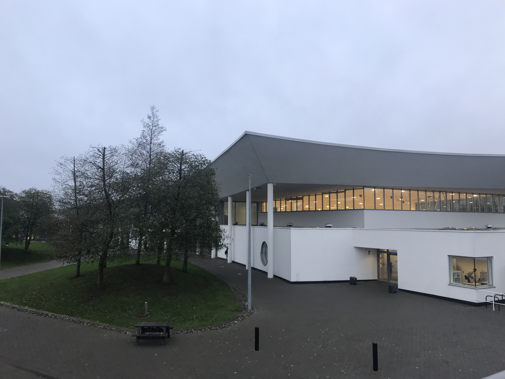 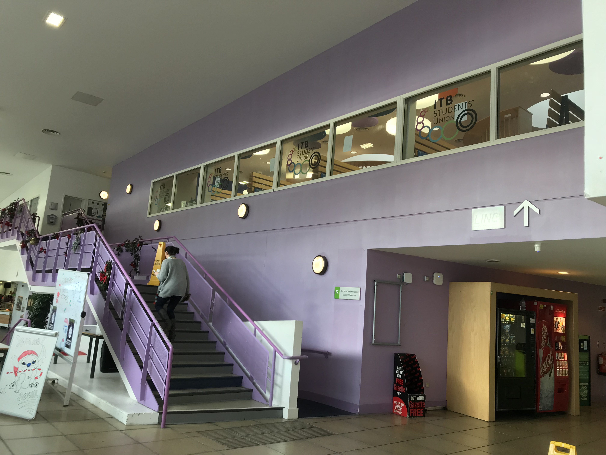 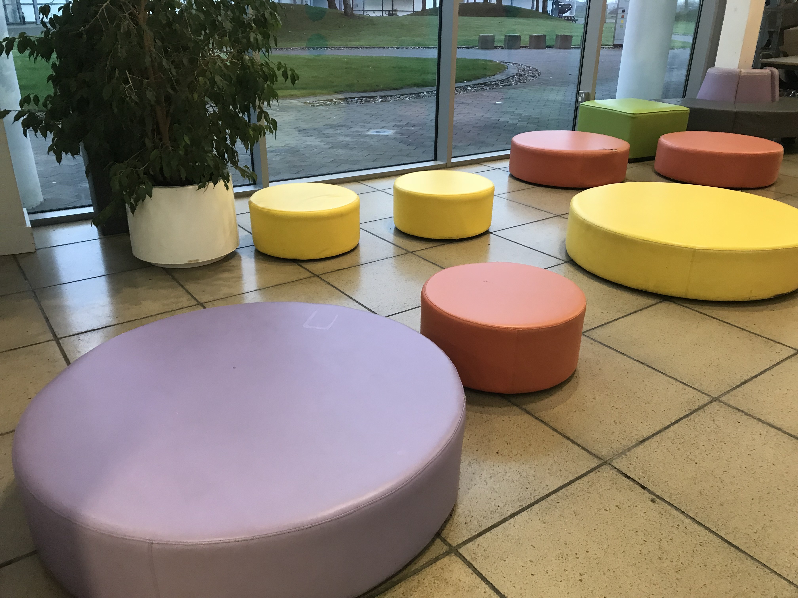
An all-around favourite area with the biggest response was the canteen/ C block. The canteen is a hub for everyone on campus it has a relaxed and fun atmosphere. A student quotes the canteen as “ A great place to hang out and catch up with friends”. The canteen is filled with bright colours and cosy areas that make it a great place to unwind and have some good food
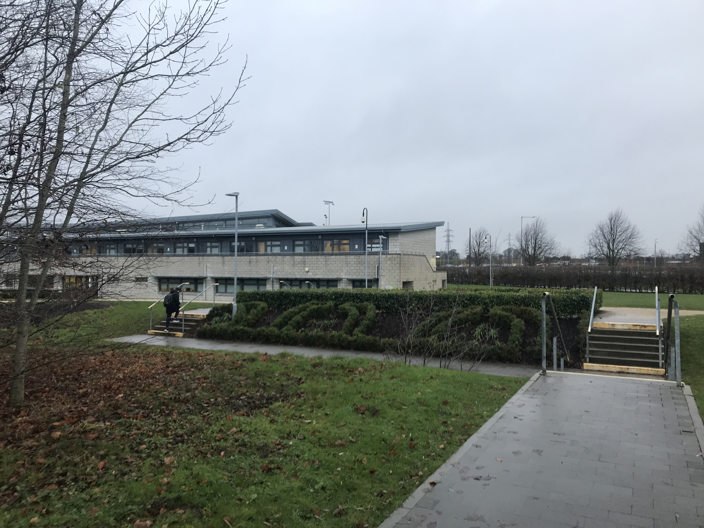 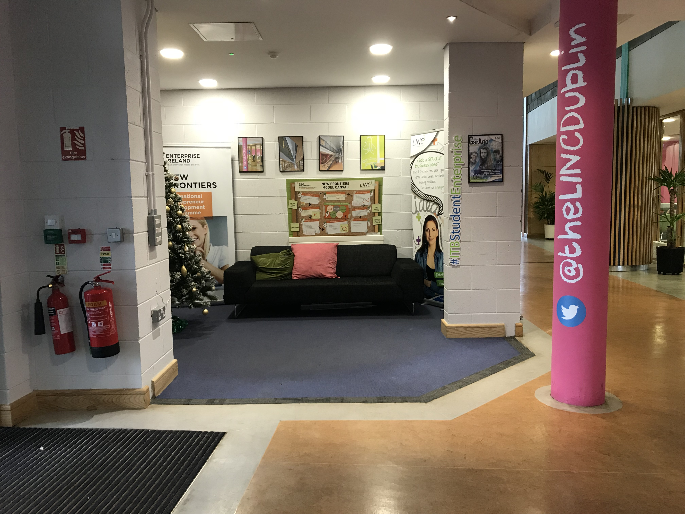
A building the is communally loved is the linc Building. The linc building has history behind it which you can learn about on the history page. Linc is a cosy and small building it offers some sanctuary for stressed students and lecturers a like with it quant and nice café. The linc buliding is also equiped with a mac lab which has just been given new life with brand new macs.
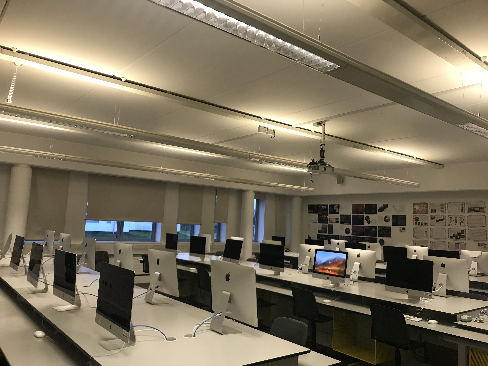 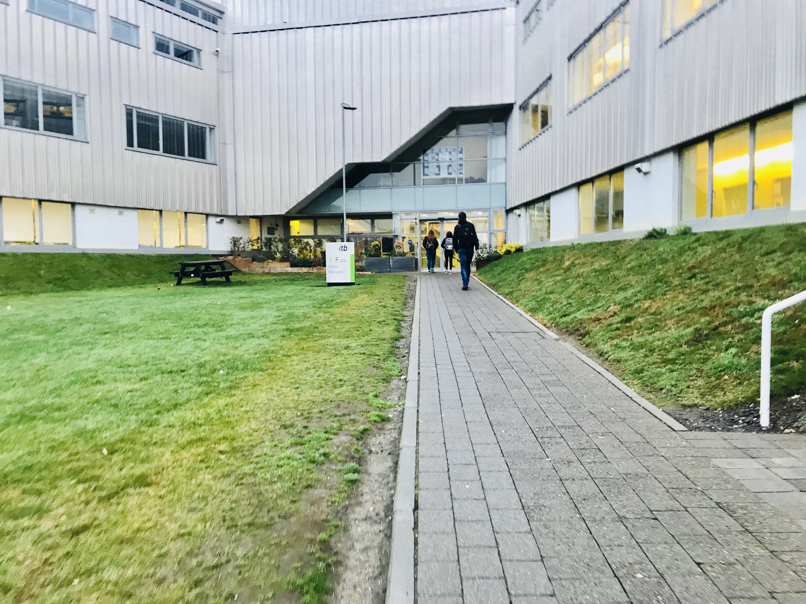 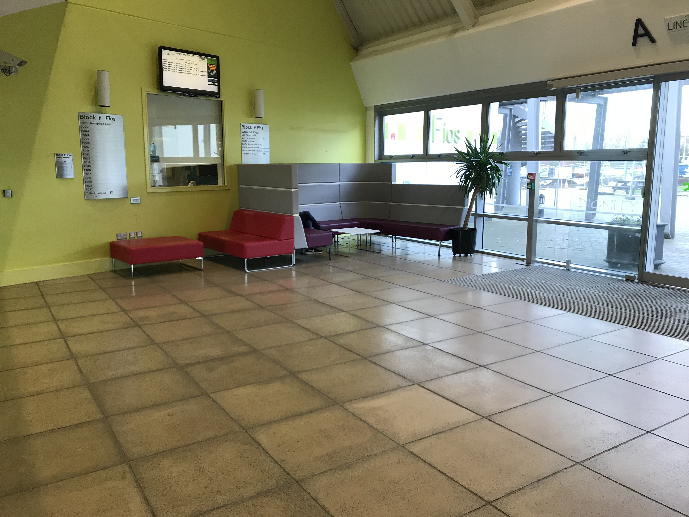
F block is by far one of the more popular places on campus with it includes a lab that is very popular F036. This is known as a Mac lab is where you will mostly find Creative Digital Media Students hard at work. “The lab is a great place and always gets me working”. This lab is a great spot if you are looking to do groupwork or just do some assignments that need the assistance of a mac. There is also a seating area here which students relax in this was an area that has been
 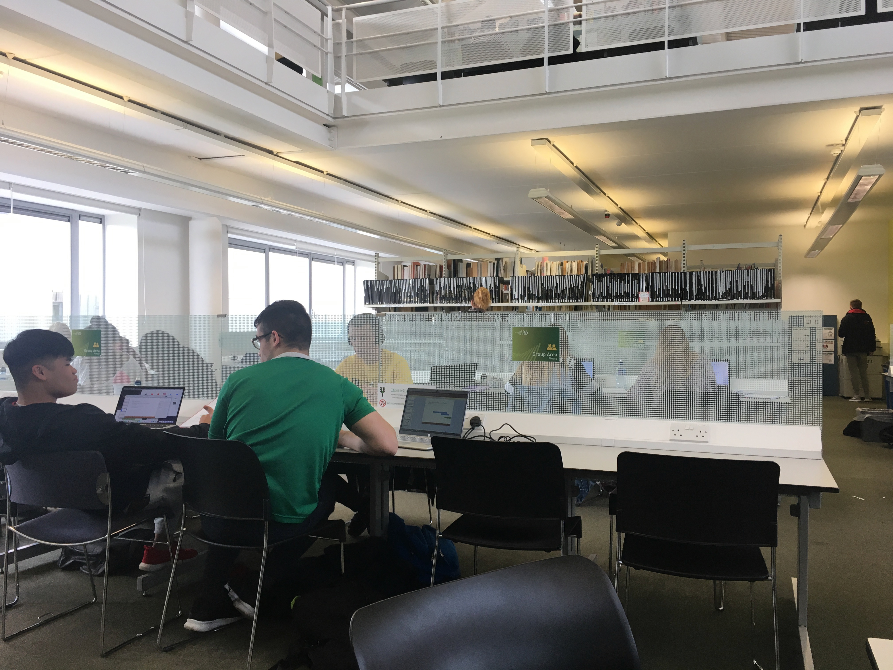
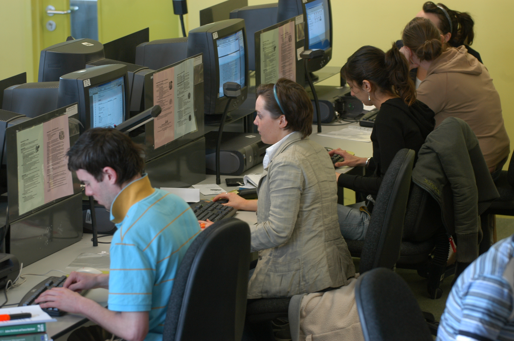
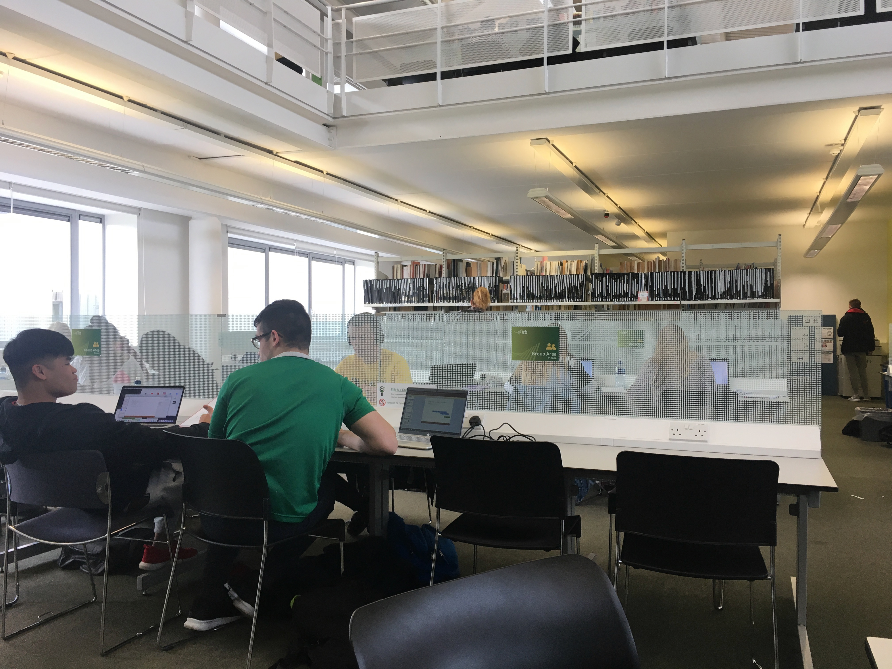
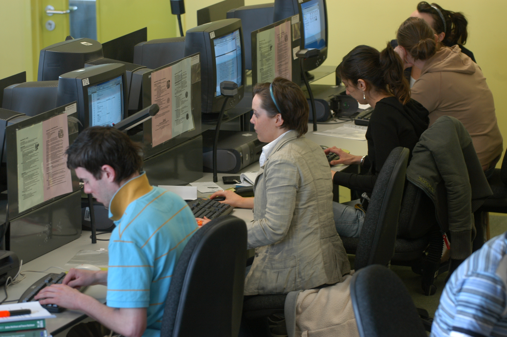